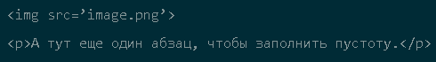
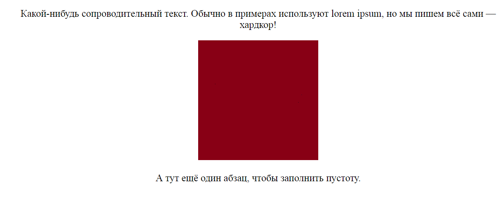

Информация
Что такое HTML

Что такое CSS

Пройти тест

Основы HTML
HTML (Hypertext Markup Language) - это код, который используется для структурирования и отображения веб-страницы и её контента. Например, контент может быть структурирован внутри множества параграфов, маркированных списков или с использованием изображений и таблиц данных. Как видно из названия, эта статья даст вам базовое понимание HTML и его функций.
Возможности HTML
Язык состоит из тегов — это своеобразные команды, которые преобразовываются в визуальные объекты в браузере пользователя. Например, тег <img> используется для размещения изображений на странице. У него есть обязательный атрибут src, в котором указывается ссылка на файл.
Еще вы могли заметить тег <p>. Он используется для создания абзацев. Этот тег парный, то есть на конце абзаца должен стоять закрывающий </p>. Парные теги применяются для разметки блоков:
- контейнеров;
- абзацев;
- заголовков;
- списков;
- таблиц и так далее.
В них могут находиться другие блоки или отдельные элементы, такие как изображения.
Вот, например, что будет, если поместить код в блок <center>:

Что нельзя сделать на HTML
Простыми словами, HTML — это каркас сайта. В нем могут быть прописаны:
- ссылки;
- таблицы;
- изображения;
- блоки;
- абзацы;
- формы;
- заголовки и так далее.
Также есть ограниченные возможности по изменению внешнего вида:
- поменять цвет;
- указать фоновое изображение;
- изменить шрифт;
- сделать текст жирным, курсивным, подчеркнутым, зачеркнутым и так далее.
Как долго учить HTML
Основы, которых хватит на создание простых сайтов, можно изучить за час. То есть быстрее, чем была написана эта статья. Но, как и в любом деле, мастерство приходит с практикой. Мало просто создать каркас — нужно убедиться, что он правильно отображается везде.
С последним у многих проблемы, поэтому верстальщики, которые могут написать адаптивный сайт, высоко ценятся у работодателей.